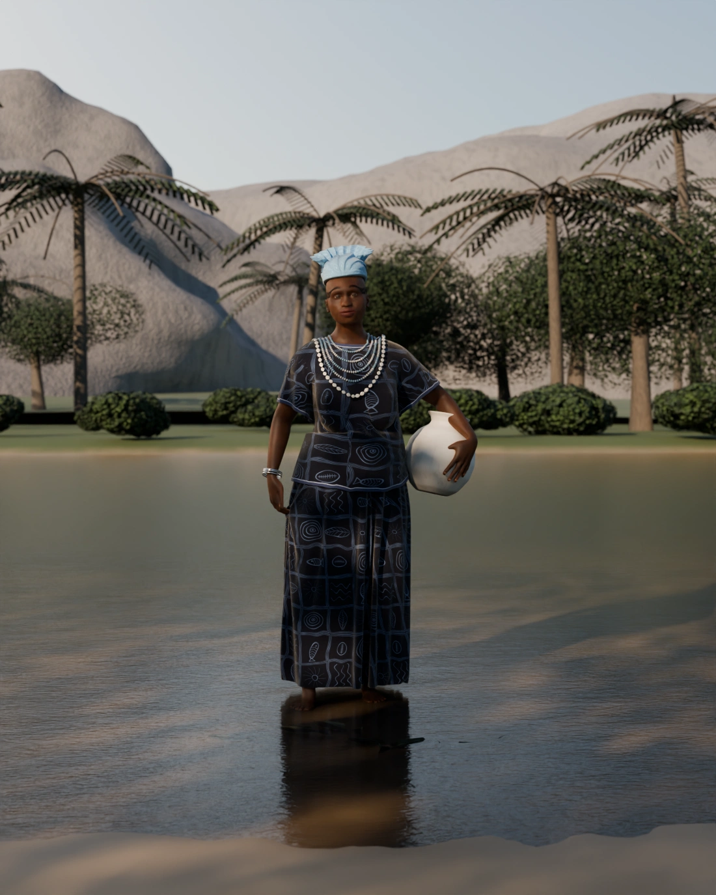
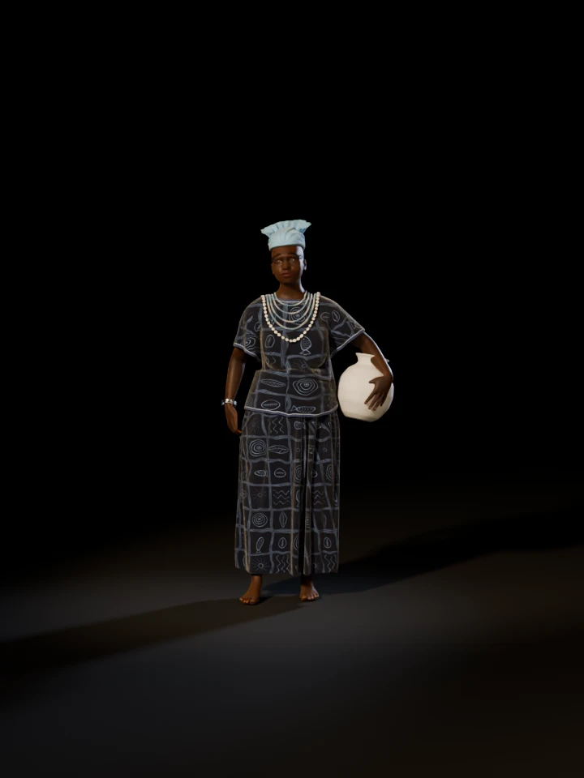

Yorùbá òrìṣà of motherhood and the river
A photoreal study of the mother of the òrìṣà in the shallows of her river in the late afternoon. She wears an ìró and bùbá of indigo àdìrẹ and a light-blue gèlè, with crystal and blue beads strung seven and seven and a strand of cowries. She carries a white pot at her hip, and fish, her children, swim round her feet.

Drag across the figure, use the slider, or focus it and press the arrow keys. Thirty-six views, ten degrees apart, rendered under the same lights as the figure turns.

Loading views 0 / 36
The white pot on her left hip, the beads and cowries over the bùbá, and the squares of the àdìrẹ.
The gèlè's pleats in profile, sweeping up behind, and three silver bangles on her right wrist.
The pleats rising round the back of her head over the knot at the nape.
The pot carried on her hip under her arm, her hand spread on its belly.
Select a picture to see it at full size.
Imagined · the sources do not describe her
Yemọja is a mother spirit and the patron of women and of mothers, so she is drawn as a full-figured woman of about fifty with a calm face. None of the sources used here says how she looks; she is often shown as a mermaid, an image this figure does not use.
Source: Wikipedia: Yemọja
Head tie · in her colour
Her gallery figure wears a light-blue gèlè, the colour of her ritual dress in Brazil. Its shape is the study's own: a close wrap with its pleats running to a knot at the nape, and a band of nine folds standing round the back of the head.
Source: Wikipedia: Yemọja
Glass beads · cowries
Her necklaces use crystalline beads, and in Cuba they run seven blue beads, then seven crystalline. Each strand here is strung so. The cowries below them stand for her wealth.
Source: Wikipedia: Yemọja
Clay under a white slip
White jars and pitchers are among her shrine objects. This one is a round water pot carried on the hip, as her gallery figure carries it. Its shape is the study's own.
Source: Wikipedia: Yemọja
Indigo · cassava-paste resist
Yorùbá women pattern àdìrẹ with a resist; for eleko, cassava paste is painted on before dyeing, and Abẹ́òkúta, her cult centre, is considered the capital of the craft. The design here is the study's own: fish, her children; cowries, her wealth; ripples and waves.
Source: Wikipedia: Adire
Fish · the shallows
Her name is a contraction of the Yorùbá words for mother, child and fish: mother whose children are fish. Seven tilapia turn in the shallows round her feet.
Source: Wikipedia: Yemọja
River · granite domes
She is the patron spirit of rivers, especially the Ògùn, and Abẹ́òkúta, on its banks, is a major centre of her cult. The city is named for the granite of Olúmọ Rock. This bend of the river and its domes are invented, and Olúmọ Rock is not copied.
Source: Wikipedia: Yemọja
None of the sources used here describes how Yemọja looks. What she wears follows her gallery figure and what the sources say of her colours, beads and shrine objects, so this figure is an interpretation, not a cult image. This list keeps the two apart.
The body starts from MakeHuman’s free base mesh, shaped as a full-figured woman and rigged. The pot was set against her left hip first, with room for the cloth, and her left hand was solved to it, the fingers closing until they rest on its belly.
The ìró is one cloth wound round the hips and the bùbá is cut from the body, both simulated with the pot as solid, so the cloth settles round it. The àdìrẹ is painted square by square, with the fine veins where dye runs into cracked paste.
The gèlè is a surface lifted off the skull with its pleats running to a knot at the nape, and a band of folds standing round the back of the head. The river is a slab of water over a sandy bed, its sunlight let through to the bed, with fish below the surface and granite domes beyond.
Every stage is a Python script in 3d/yemoja/blender/, using the toolkit in 3d/toolkit/, and the finished scene is 3d/yemoja/yemoja.blend.
| Wrapper cloth, simulated vertices | 27,848 |
|---|---|
| Bùbá cloth, simulated vertices | 28,981 |
| Simulated frames, wrapper / bùbá | 110 / 110 |
| Body mesh vertices, before smoothing | 13,380 |
| Blue / crystal glass beads | 223 / 211 |
| Cowries | 62 |
| Folds in the gèlè's band | 9 |
| Fish in the shallows | 7 |
| Trees and palms / shrubs | 195 / 170 |
| Samples per pixel, stills / turntable | 96 / 32 |